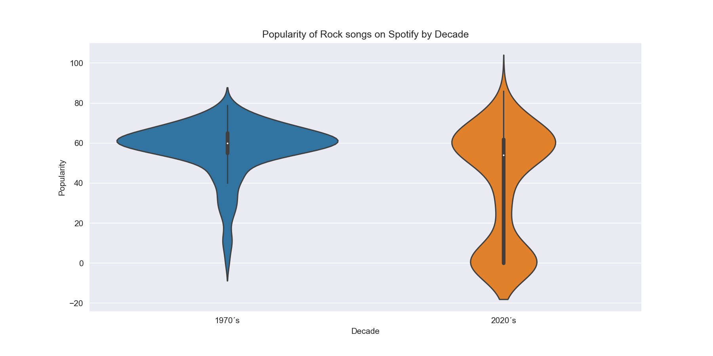
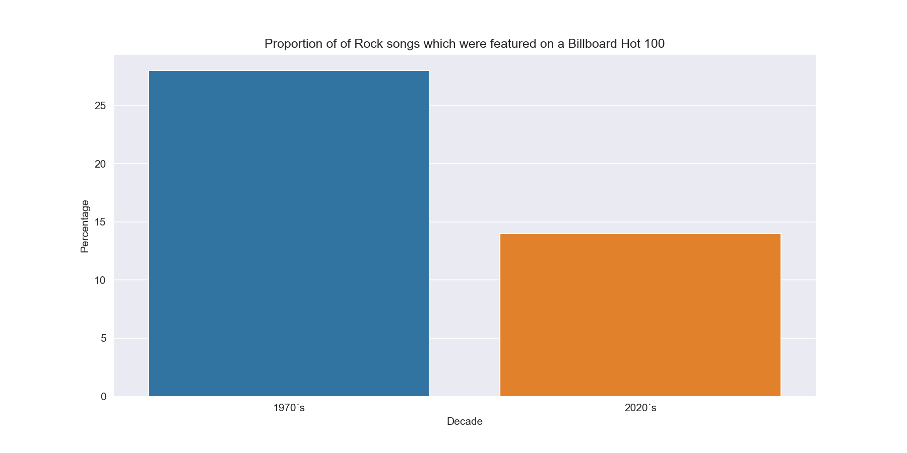
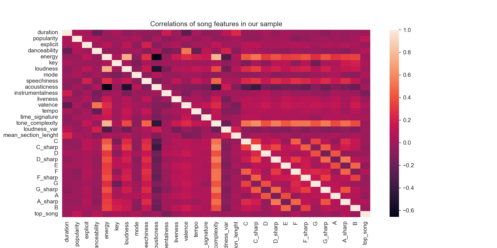
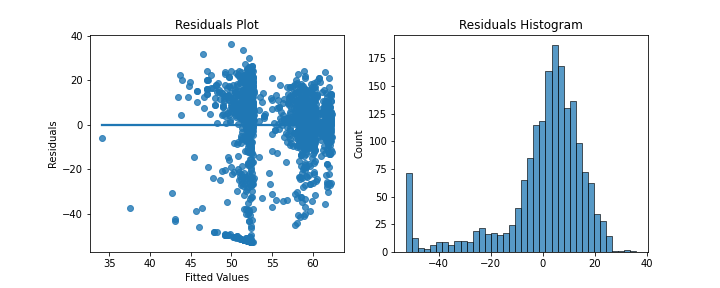

Spotify Rock Songs Analysis
By Omar Polanco Cázares. 17/02/2023
I have always found mysef deeply interested in music. I believe that it is one of the most beautiful forms of expression, whose history dates back to 40,000 years ago [1].
Ever since its first appearance, music has changed and evolved, shaped by social and historical events. This has not been different in the last fifty years: music is in constant progress. New ways of expressing emotion through sound arise every single day. Human creativity never stops. This is why I find it very interesting to try to find the exact ways in which this art has developed since the decade of the seventies. How melodies, harmonies and rythms have transformed, how new instruments and techniques have created new genres. I find it thrilling to be able to discover how art adapts and grows. Another point, closely related to these, is what elements make a song likable. I want to understand what it is that certain songs have that make people feel good when they listen to them.
Is there any clear way to know which songs are going to be popular based on their metrics, or is there something deeper, that can't be measured numerically?
[1] Killin, A. (2018). The origins of music: Evidence, theory, and prospects. Music & Science, 1. https://doi.org/10.1177/2059204317751971
1. Introduction
We will explore a dataset containing a sample of 1800 rock songs that are available on Spotify. I selected 300 songs from six different decades, starting in the seventies and all the way to the present day. I collected this information by using Spotify's API and the spotipy Python module. I made a random selection of songs from each decade by using a search query that included randomly selected characters and the time period I wanted. Once I had all 1800 songs in a dataframe, I used a function in the spotipy module to obtain the audio features of each one of them. Finally, I used another function that allows you to find the many smaller segments a song is made up of and the audio metrics within each one of them.
The research questions that this report intends to provide answers to are:
- Are rock songs from the seventies and from the twenty twenties equally popular?
- Are rock songs from the seventies and from the twenty twenties equally likely to be featured in a Billboard Hot 100 chart?
- Is there a linear relationship between popularity and audio features?
The dataset looks like this: It contains 41 variables. Some of these are variables that help identify what song is in that row: name, artist, album name, and their corresponding identification numbers. We also have some basic information about the track such as duration in milliseconds, release date and whether it is explicit or not. Then, we have the song's audio features: danceability, energy, key, loudness, speechiness and acousticness, among others. After that, we have calculated features: tone complexity represents how strongly different tones are present in all segments within a song. I averaged out the strenght of each one of the twelve tones in every segment of each song. If a song has segments with one very dominant tone and eleven barely noticeable tones, it will have a very low value for this variable. We also have the variance of the loudness in every segment within a song and the mean section lenght, where one section is a noteciably different part of the track, such as intro or chorus. These metrics may help us capture how complex a song is. We also have variables representing the relative strenght of each of the twelve tones in the song. Finally, we have a variable that indicates the popularity rating that Spotify has assigned to that song, and another one where we can see if the song has ever been listed in a Billboard Hot 100 chart since it came out.
| track_id | track_name | duration | popularity | explicit | artist_id | artist_name | album_id | album_name | release_date | ... | E | F | F_sharp | G | G_sharp | A | A_sharp | B | Decade | top_song | |
|---|---|---|---|---|---|---|---|---|---|---|---|---|---|---|---|---|---|---|---|---|---|
| 0 | 6meH4I9A4WZtD3z8hnQKqr | From The Morning | 150850 | 58 | 0 | 5c3GLXai8YOMid29ZEuR9y | Nick Drake | 5mwOo1zikswhmfHvtqVSXg | Pink Moon | 25/02/1972 | ... | 0.302758 | 0.594458 | 0.441691 | 0.739168 | 0.230356 | 0.235939 | 0.092282 | 0.221884 | 1970's | 0 |
| 1 | 5yrsBzgHkfu2idkl2ILQis | You Don't Mess Around with Jim | 184640 | 61 | 0 | 1R6Hx1tJ2VOUyodEpC12xM | Jim Croce | 3L9sVl5T7UpFK6tNeEiXdy | You Don't Mess Around With Jim | 01/04/1972 | ... | 0.691369 | 0.284395 | 0.314179 | 0.381449 | 0.381408 | 0.451971 | 0.307919 | 0.414050 | 1970's | 0 |
| 2 | 5dG0VEQ30r7GKylD5rsaEe | In Search Of England | 256693 | 6 | 0 | 2pVMD4bFwl4AyoYyyo51Qg | Barclay James Harvest | 6lNDlPa3ZNtqdLkirnpFxM | XII | 1978 | ... | 0.262113 | 0.332959 | 0.216197 | 0.347551 | 0.182995 | 0.292866 | 0.273011 | 0.265004 | 1970's | 0 |
Now, we will start analizing the dataset in order to answer the research questions.
2.1 Are rock songs from the seventies and from the twenty twenties equally popular?
Spotify's popularity metric is composed of three main factors: 1. Total streams of a song, 2.How recently a song has been played and 3. The frequency that a track has been played. This means that this number not only considers how many times people have listened to a track, but also when these listens have taken place and whether they were all
in a short timeframe or have evenly been spread accross time.
This way, if two songs have the same number of listens, but one has been listened recently while the other one was listened ten years ago, the recent song will have a greater rating. Then, using this variable we learn if old songs have remained popular in the present or if they have lost popularity to new songs. The question we will answer is:
Is there sufficient evidence to suggest that there is an association between decade and popularity in all the rock songs on Spotify from the 1970's and the 2020's?
To do so, we will first take a look at a violin plot comparing the popularity of songs in both decades. We find that their medians are not too far apart. Popularity of songs from the 70's is very densely located around 60, as 50 percent of the songs in our sample have a rating between 55 and 65. However, the popularity of rock songs of the 2020's has a bimodal distribution with a lot of tracks concentrating around a score of 60 and many others around zero. This means that, at least in our sample, popularity of rock songs is much more spread out for songs from this decade than from the seventies. This could be an indication that the mean popularity of these two decades is statistically different.
Even though our sample distributions, and, arguably our population distirbutions are not normal, given the fact that we have a decently large sample, we will use a t-test to evaluate this claim. We will not assume equality of variances. First, we will establish our hypotheses:
\(H_o: \mu_{1970} = \mu_{2020}\)
\(H_a: \mu_{1970} \neq \mu_{2020}\)
We perform the T-test using Scipy. We obtain a p-value of \(3.7x10^{-20}\), which is virtually zero. Then, we can conclude that there is enough evidence to suggest that the mean popularity of rock songs from the seventies is different than that of rock songs from the current decade. We can also obtain a confidence interval, which indicates that we are 95 percent confident that rock songs from the 1970's score, on average, between 13.9 and 21.1 higher on popularity than rock songs from the 2020's.
2.2 Are rock songs from the seventies and from the twenty-twenties equally likely to be featured in a Billboard Hot 100 chart?
Another way to measure how popular a song is, is finding if it ever made it to a Billboard Hot 100 chart. This can help us find if there was any point in time when the song was considered one of the hundred most popular songs at that moment. The Hot 100 is currently ranked by radio airplay audience impressions as measured by Nielsen BDS, sales data compiled by Nielsen Soundscan (both at retail and digitally) and streaming activity provided by online music sources. We now show the percentage of songs from either decade which were featured in a Billboard 100. 
However, digital sales and activity were, for obvious reasons, not part of the ranking in the seventies. This change in the measurement method could affect the conclusions we derive from our sample, so we should be cautious. We will now establish our hypotheses.
\(H_o: p_{1970} = p_{2020}\)
\(H_a: p_{1970} \neq p_{2020}\)
We proceed to perform a two-proportion test, using the normal approximation. We obtain a p-value of $1.9x10^{-5}$. We also can obtain a confidence interval for the difference of these proportions. Then, we can be 95% confident that the proportion of songs from each decade that are featured on a Billboard 100 differs by between 7.5 and 20.4 percentage points.
2.3 Is there a linear relationship between popularity and audio features?
In this section of the report we will deal with the popularity metric of songs. We will not only use a sample from the seventies and the twenty-twenties as we did in the previous part. We will use our entire dataset. What we would like to discover is what makes a rock song popular. Is it possible to find specific characteristics that make people like a track? In order to explore these ideas, we will use linear regression to find answers to these questions. However, we first need to be able to find out wich variables to use in our model. If we want to find out which features are correlated with popularity in our sample, we can use a heatmap.
We find that our features are not strongly correlated with popularity. This could be an indication that a linear model may not be adequate for this problem. However, we can make sure by creating a linear regression model.
We use mlxtend's sequential forward selection to find out which features from the dataset produce a better model. The algorithm selects the following features:
- Speechiness
- Song from the 1990's
- Song from the 2000's
- Song from the 2010's
\(\hat{popularity} = 53.71 - 41.46 \: (Speechiness) + 6.4804 \: (Decade\: 1990's) + 7.65 \: (Decade\: 2000's) + 9.67 \: (Decade\: 2010's) \)
We also obtain a p-value less than 0.001 for the coefficients of each one of these variables. This means that, if the model's assumptions are complied with, we would be able to claim that these variables have a linear relationship with popularity in the entire population of rock songs on spotify released since 1970. So, we will plot the model's residuals to find out if it is possible to make that conclusion.
From looking at these plots, we can say that our model does not meet the conditions of linear regression. We can see that some of the residuals follow a curve similar to a normal distribution, but there are many others with gather up around negative fifty. Also, there seem to be more positive than negative residuals. Finally, the variability of the residuals seems to change as we move along the x-axis of our plot on the left.
Then, we can answer our research question. We cannot claim that there is a linear relationship between audio features and popularity of rock songs on Spotify. This could mean that either the relationship between our variables and popularity exists, but is not linear, or that there is no real relationship between them.
3. Conclusion
In this report, we found that there is sufficient evidence to suggest that the mean popularity of rock songs from the seventies is not equal to the mean popularity of rock songs from the tewnty-twenties.Also, there is sufficient evidence to suggest that the proportion of rock songs from the seventies that make it to the Billboard Hot 100 is not equal to the proportion of rock songs from the tewnty-twenties that make it to the ranking. There is an association between decade and whether a song is listed in the Billboard Hot 100 for all rock songs on Spotify from the 1970's and the 2020's. This shows us how music taste has changed in time, and how old rock music is still more popular than this decade's rock music. After that, we found that we cannot claim that there is a linear relationship between popularity and a song's characteristics. This relates to our curiosity about the possibility of finding how popular a song is going to be based merely on audio metrics. We now think that even if measures can give us an idea of how a song will sound, there is something more profound that generates popularity and that we could not find in the variables that we studied.
Link to the repository with the code: Spotify Analysis